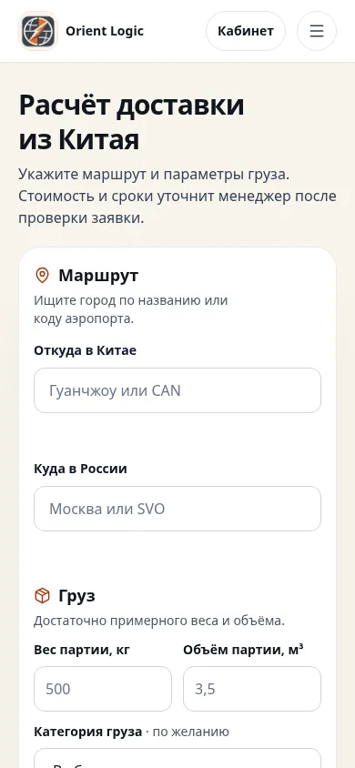

Сайт для заявок
Одна адаптивная страница до пяти блоков, форма и передача заявки на почту или в один чат.
от 25 000 ₽Листайте или жмите ↓ и ↑
Студия разработки Devlarion · Илья Ларионов
Сайты, боты и ИИ-сервисы
Помогаю бизнесу принимать заявки и сокращать ручную работу. Разрабатываю сайты с каталогом, ботов для записи и сервисы, которые связывают данные компании.
t.me/LuvLarion4ik
01 · Услуги
Конструктор из того, что мы собираем
Начинаем с одного процесса. На пилоте проверяем, как агент работает с вашими данными, затем связываем роли и подключаем системы.
Обсудить направлениеПодбираем модель под нагрузку, разворачиваем её в вашем контуре и настраиваем доступ команды. Оборудование рассчитываем отдельно.
Обсудить направлениеСайт с понятной структурой услуг, формами заявок и системой управления контентом.
Обсудить направлениеЛичный кабинет или внутренний сервис для одного процесса с ролями, данными и историей операций.
Обсудить направлениеКаталог, запись или оформление заказа в Telegram, VK, MAX либо в браузере как PWA.
Обсудить направлениеПриложение для сотрудников или клиентов. Платформу и функции первого релиза выбираем вместе.
Обсудить направлениеБот собирает данные, передаёт их в рабочую систему и сообщает сотруднику, когда требуется решение.
Обсудить направлениеПроектируем интерфейс ключевого сценария или собираем базовую айдентику для запуска продукта.
Обсудить направлениеОбсудим требования отрасли, интеграции и ограничения под NDA. Подготовим варианты решения и смету.
Обсудить направлениеСтартовые пакеты для небольшого бизнеса. Для компаний любого масштаба подберём условия и обсудим скидку — итоговую стоимость пришлём после созвона.
Одна адаптивная страница до пяти блоков, форма и передача заявки на почту или в один чат.
от 25 000 ₽Меню, один сценарий записи или заявки и уведомление в чат менеджера.
от 20 000 ₽Каталог до десяти позиций в Telegram. Покупатель выбирает товар и оставляет заявку продавцу.
от 55 000 ₽02 · Кейсы
Машина едет за курсором. Кликните по фону — она распылит искры.


01 · Международная логистика
Next.jsTypeScriptTelegramTailwind CSS


02 · Мебельный салон «Интерьер» · сайт и MAX-бот
MAXFastAPISQLiteJavaScriptVitePython


03 · Модульные дома Демо-данные
У клиента работает тот же сайт с его названием, логотипом и каталогом. На демонстрационной версии представлены условные данные.
КаталогTelegramHTMLCSSJavaScriptGitHub Pages


04 · Строительные технологии Демо-данные
У клиента работает тот же сайт под своим названием и логотипом. Название, цены и объекты в демонстрационной версии условные.
3D-печатьКаталог комплектацийHTMLCSSJavaScriptEmailJS
03 · Процесс
Я ваш контакт от первого сообщения до сдачи. На созвоне разбираю, как устроена работа сейчас, предлагаю решение и показываю результат по этапам. Условия NDA согласуем до передачи закрытых материалов.
Вы описываете процесс и ожидаемый результат. Мы готовим вопросы и варианты реализации к первому созвону.
На первом созвоне обсуждаем варианты. На втором уточняем детали и согласуем итоговый объём.
Фиксируем результат, сроки, этапы и порядок приёмки. Порядок оплаты согласуем в договоре.
Показываем результат по этапам или целиком, как договорились. Учитываем обратную связь, подписываем закрывающие документы и получаем остаток оплаты.
Два месяца после сдачи исправляем обнаруженные недочёты без доплаты. Дополнительные задачи оцениваем отдельно.
04 · Продукты
Закрытая бета
Ассистент для iPhone и Apple Watch в закрытом бета-тестировании. В режиме «Тихий суфлёр» подсказка появляется на затемнённом экране часов.
B2B / B2G · NDA
Интегрируем коммерческий сервис в государственный, чтобы пользователю было проще получить услугу. Подробности проекта защищены соглашением о конфиденциальности.
Бета · подготовка к лицензированию
Приложение для macOS с управлением с клавиатуры, созданное на основе открытого Copilot от Magerko. Готовим коммерческий выпуск по лицензии.
MVP в разработке
Инструмент для команд, которые хотят оценить реакцию аудитории на интерфейс или рекламный материал до запуска.
Команда загружает макет и задаёт вопрос к нему. В отчёте можно посмотреть, какие элементы привлекли внимание и что стоит проверить перед запуском.
Демо · в разработке
ИИ-репетитор, который определяет уровень ученика и помогает разбирать задания по конспектам и фотографиям тетрадей.
В демо педагог подключает учеников и назначает задания. Родители видят прогресс своего ребёнка. Для демонстрации используется учебная группа с условными данными.
05 · Студия
Devlarion разрабатывает сайты, ботов, мобильные приложения и ИИ-сервисы для бизнеса. Ведём проект от аналитики и дизайна до запуска и поддержки. Работаем по договору с ИП. Состав, смету и этапы согласуем до начала работ.
Next.jsTypeScriptFastAPISwiftUITelegramMAX
В разделе услуг указаны стартовые цены и состав каждого пакета. Если нужны интеграции или несколько сценариев, на созвоне уточним объём и возможную скидку. После встречи пришлём итоговую стоимость.
Начнём с видеозвонка. Если нужна личная встреча, напишите город и что хотите обсудить — согласуем формат заранее.
Да. Для развёртывания моделей заранее разбираем доступные мощности, требования к данным и ограничения доступа.
Обсудим режим конфиденциальности до передачи закрытых материалов и закрепим условия в документах.
Объём правок, передачу исходников и права на результат согласуем в договоре до начала разработки.
Дальнейшие доработки оцениваем отдельно. Для регулярных задач можно согласовать подписку на сопровождение.
Выберите тип проекта, масштаб и опции — калькулятор покажет вилку стоимости в рублях, долларах, евро, BYN или KZT.
Открыть калькуляторНапишите, какой процесс хотите изменить, кто им пользуется и как сейчас выглядит результат. Сообщение получит Илья.